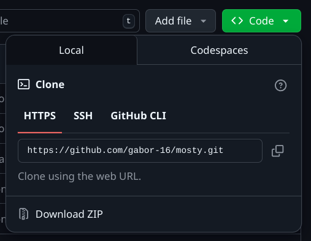

To jest dokumentacja do gry Most(l)y Done. Zawarte tu są informacje dotyczące pobierania programu z
repozytorium, użytych algorytmów oraz błedy które napotkaliśmy w czasie trwania projektu.
Na dokumentacje do gry składa się ten plik, obrazy w folderze doc a także komentarze zawarte w plikach kodu.
Gra typu budowanie mostów, główną inspiracją w tworzeniu projektu była gra Poly Bridge. Głównym celem w grze jest stworzenie mostów będących w stanie utrzymać pojazdy starające się przejechać na drugą stronę.
Niczym. Realistyczne zmienne ig
Do korzystania nie są potrzebne żadne dodatkowe zależności. Potrzebna jest tylko działająca przeglądarka i dostęp do internetu przy pobieraniu.
Grę najpierw należy pobrać. Wszystkie pliki gry znajdują się na repozytorium na githubie. Są dwa sposoby aby pobrać repozytorium: za pomocą programu git lub pobrać folder ze strony repozytorium.
Aby pobrać grę należy wejść na repozytorium klikąć przycisk "Code" i w rozwijanym menu "Download ZIP". Pobrany zostanie folder zip zawierający wszyskie pliki, który trzeba rozpakować.
Urzywając wiersza poleceń w wybranym przez nas folderze używamy polecenia git pull z adresem repozytorium. Pobrany zostanie folder zawierający wszystkie pliki.
git clone https://github.com/gabor-16/mosty
Aby uruchomić program należy otworzyć plik main.html w przeglądarce. Po załadowaniu pokaże się samouczek. Poziomy można wybierać dowolnie w menu wyboru poziomów.
Tutaj znajdują się opisy algorytmów użytych do stworzenia gry.
Tutaj znajdują się opisy oraz przykłady używania testów znajdujących się w tests.js.
Ta sekcja dokumentacji jest poświęcona błędom, które napotkaliśmy na swojej drodze podczas tworzenia gry. Nie zawiera ona istotnych informacji na temat gry ale uznaliśmy, że ją dodamy aby udokumentować niektóre ciekawe błędy, które stworzyliśmy.
Pomijając oczywiste problemy typu konflikty lub jedej osoby która miała tyle błedów na gałęzi, że trzeba było ją robić od nowa i trzeba było siedzieć na tym dobre 30 minut to z bardziej interesujących błedów będą opisane w tej sekcji dokumentacji.